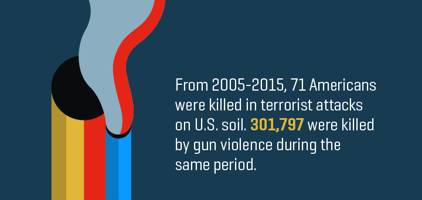
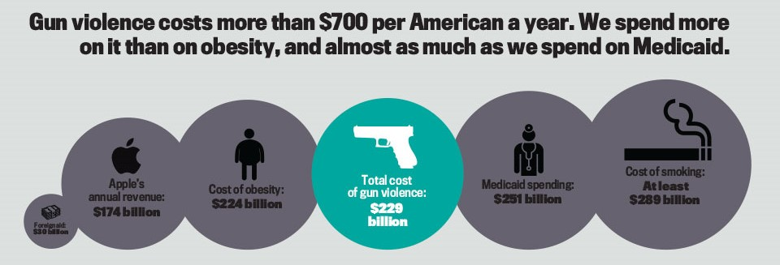
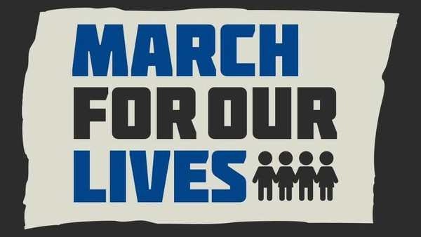

Deaths Where Guns Were Involved
- 29,618,300 violent crimes were committed between 2007 and 2011 (using a firearm)
- 0.79% of victims (235,700) protected themselves with firearm, 230 "justifiable homicides" compared to 8,275 criminal gun homicides 0.12% of victims (103,000) protected themselves with a threat of use or use of a firearm
- 0.12% of victims (103,000) protected themselves with a threat of use or use of a firearm
- On an average day, 96 Americans are killed with guns
- On average there are nearly 13,000 gun homicides a year in the United States
- For every one person killed with guns, two more are injured
- Black men are 13 times more likely than white men to be shot and killed with guns

Not Properly Stored/Stolen Guns and Cost to American Taxpayer
- Between 2005 and 2010, 1.4 million guns were stolen from homes
- Adds to the power of burglars and increases the risk of more gun violence
- 1.7 million children live with unlocked, loaded guns - 1 out of 3 homes with kids have guns.
- Among children, the majority (89%) of unintentional shooting deaths occur in the home. Most of these deaths occur when children are playing with a loaded gun in their parent’s absence.
- There are more than 350 million guns in circulation in the United States — approximately 113 guns for every 100 people
- In states with increased gun availability, death rates from gunshots for children were higher than in states with less availability.
- The United States Accounts For 91% of children killed by guns in high income countries.
- Costs US government $5.5 billion in lost tax revenue ($4.7 billion in court costs & $1.4 billion in Medicare)

Gun Control Causes Less Homicides and Suicides
About 36 percent those deaths are the result of a homicide, while about 60 percent are from suicide.
1999 and 2013 there were 270,237 firearm suicides in the United States (accounts for about 50% of suicides)
Permit sales and banning of minors owning firearms is the best way to stop the problem
States in the U.S. that have strict gun policies have a lower homicide and suicide rates
In recent years, the number of homicides has gone down (not including intentional homicides):
-More police officers on duty
-Police using computers and intelligence from multiple agencies
-Less alcohol being drunk = Less domestic violence
